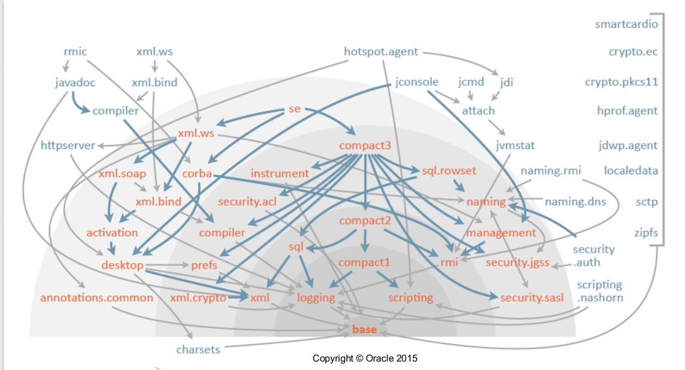

Java 9
An early sneak peek
Note: arrow keys to move on slides, Esc to zoom-out
About Me ?
Why does Java needs advancement?
There are only two kinds of languages; the one people love to complains about and the other nobody use it.
Bjarne Stroustrup, author of C++
Journey of the Language
- Java was born in 1995
- Interesting question is,
Why java lasted so long? - Language Extension Model was always based on pain points,
! fancy features to compete other programming languages - Big changes in Java until now
Generics, Lambdas
JEP Process
How are changes/extensions make their way to JDK?
Quick Recap of JDK 8
- Lambdas
- Streams
- Method References
- Type Annotations
- Nashorn JS Engine
- new tools like jdeps,jj
- default methods in interfaces
Outline of JDK 9
- Project JigSaw - Modules
- Project Kulla - Java REPL
- Project Coin - adding cool features in language
- Project Argona - Thread.onSpinWait()
- HTTP & Process API
- JDK Benchmarks
- Garbage collector
- Collection API
.
"Modules" (Project JigSaw)
Lets start with pain points?
ClassPath Paint point

Hadoop has 110 jars in classpath
Monolithic JDK
- IOT example, can need small JDK part
- Cloud servers which might need JDK parts for diff purposes
JDK dependency graph
Issue is API usage is are not organized properly
Eg: Someone using CORBA might use some util classes from AWT
API's usage mess, within JDK
 .
.
JAR hell problem
Suppose you have 2 jars with same class name placed in same package
but the class code differs, which one will be loaded?
We don't know what depends on what
Restrict API's
problems with sun's internal / unsafe API's
usage by plenty of popular frameworks
- *.sun.misc.*
- *.internal.*
- Unsafe.java
Common Problems
Services & Contract
Driver driver = DriverFactory.getDriver("OracleDriver");
...
// in factory
Driver driver = new OracleDriverImpl();
Weak Security API's
java.lang.SecurityManager::checkPackageAccess
So what we need
- Strong Encapsulation
- Reliable Configuration
- Classes/Interfaces visibility
What is Module
Module =
A container of packages +
Names the modules upon which it depends +
Exports specific packages for use only by modules that depends upon it
Code Encapsulation
Fields & Methods
Abstract Classes
Concrete Classes
Interfaces
Packages
Modules
Defining a Module
$ cat module-info.java
module some.complex.sql {
requires java.logging;
requires java.xml;
exports java.sql;
exports javax.sql;
exports javax.transaction.xa;
}
$ javac module-info.java
$ ls -l *.class
*-rw-r-r-- 194 module-info.class // Module descriptors //
Used Keywords from reserved
module, exports, to, uses, provides, with, requires
Sample Module
./langtools/src/jdk.compiler/share/classes/module-info.java
module jdk.compiler {
requires public java.compiler;
exports com.sun.source.tree;
exports com.sun.tools.doclint to jdk.javadoc;
exports com.sun.tools.javac.api to jdk.javadoc, jdk.jshell;
exports com.sun.tools.javac.code to jdk.javadoc, jdk.jshell;
exports com.sun.tools.javac.comp to jdk.javadoc, jdk.jshell;
exports com.sun.tools.javac.file to jdk.jdeps, jdk.javadoc;
exports com.sun.tools.javac.platform to jdk.javadoc;
exports com.sun.tools.javac.tree to jdk.javadoc, jdk.jshell;
uses javax.annotation.processing.Processor;
provides com.sun.tools.javac.platform.PlatformProvider
with com.sun.tools.javac.platform.JDKPlatformProvider;
}
Types of Modules
- Named
- Automatic
- Unammed
i.e. containing module-info.class
i.e. jar files placed to the module path
contains all the types in the classpath
Java after Modules
- JAR/classpath hell reduction
- better of managing expressive/transitive dependencies
- hide some (private) packages; com.sun.misc.*
- Lazy class loading and initialisation -> NoClassDefFoundError before loading
- system instead of manual security
- JRE size reduction
- Early flights might be rough :)
Modules in JDK
Java REPL (Project Kulla)
Lets see in action :)
Some cool features (Project Coin)
- Private Default Methods
- Effectively-final variables in try-with-resources expressions
- Can’t use single _ as a name
- @SafeVarargs in private methods
- Using diamond with anonymous classes when actual type may be deduced
Private default methods
interface IName {
void a() { /*Common code*/ ; /*a’s specific code*/ }
void b() { /*Common code*/ ; /*b’s specific code*/ }
private void c() { /*Common code*/ ; }
}
interface IName {
private void foo(String param);
// Error: private method must declare body.
private abstract void bar(int j);
// Error: private & abstract: bad combo
void normalMethod(int x); // OK.
private Object commonMethod() { return null; } // OK.
}
Effectively-final variables in try-with-resources expressions
Till Java 8
public static void main(String... args) throws ...{
FileReader f = new FileReader(“test.txt");
try (br =new BufferedReader(fr)) {
// do something
} catch (Exception ex) {
}
}
In Java 9
public static void main(String... args) throws ...{
FileReader f = new FileReader(“test.txt”);
br =new BufferedReader(fr);
try (br) {
// do something
} catch (Exception ex) {
}
}
@SafeVarargs in private methods
class VarargsFinalOnly {
@SafeVarargs private void m(List... args) { }
}
Diamond with anonymous classes
Till Java 8
./TypeInferrenceTest.java:7: error: cannot infer
type arguments for HashMap
new HashMap<>()
^
reason: cannot use '<>' with anonymous inner classes
where K,V are type-variables:
K extends Object declared in class HashMap
V extends Object declared in class HashMap
1 error
In Java 9
public class TypeInferenceTest{
Map map=new HashMap<>(){
map.put("key","value");
}
}
_ as a var name
// key: compiler.warn.underscore.as.identifier
// options: -source 8 -Xlint:-options
class UnderscoreAsIdentifierWarning {
String _ = null;
}
Process API Updates
- Get pid for the running JVM
- Get list of processes
- Operations on tree of processes
Process API Updates
Process proc = Runtime.getRuntime()
.exec(new String[]{"/bin/sh", "-c", "echo $PPID"});
if (proc.waitFor() == 0) {
InputStream in = proc.getInputStream();
int available = in.available();
byte[] outputBytes = new byte[available];
n.read(outputBytes);
String pid = new String(outputBytes);
System.out.println("Your pid is " + pid);
}
Spin Loop hint(Project Argona)
JEP 285: Sping-wait Hints
To improve performance & Latency
New method java.lang.Thread.onSpinWait()
Spin Hint(Producer-Consumer Problem)
class EventHandler {
volatile boolean eventNotificationNotReceived;
void waitForEventAndHandleIt() {
while ( eventNotificationNotReceived ) {
java.lang.Thread.onSpinWait();
}
readAndProcessEvent();
}
void readAndProcessEvent() {
// Read event from some source and process it
. . .
}
}
HTTP API's in JDK
HttpResponse res =
HttpRequest.create(new URI("http://www.google.com"))
.body(noBody())
.GET().send();
int responseCode = res.responseCode();
String responseBody = res.body(asString());
System.out.println(responseBody);
HttpRequest req =
HttpRequest.create(new URI("http://www.google.com"))
.body(noBody()).GET();
CompletableFuture asyncResp = req.sendAsync();
Thread.sleep(10);
if (!asyncResp.isDone()) {
asyncResp.cancel(true);
System.err.println("timeout");
}
And Many more..!
- many performance related changes are added
- Money Control API's
- New Version Scheme (MAJOR.MINOR.SECURITY)
- G1 will be default GC
- Variable Handles (part of Unsafe)
- Parser API for Nashorn
1.8.0_20 =>8.1.2
Beyond Java 9
Value Classes
value class Point {
int x;
int y;
Point(int x, int y) {
this.x = x;
this.y = y;
}
}
Rectified Generics
List intList = new ArrayList<>();
...
int val = intList.get(0);
class List$Point { Point get(Point index); }
So Stay Tuned for Java 9+
Things are getting interesting.!
References & Links
Q&A
Thank you :)